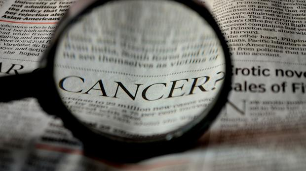

Oncology Crisis in Southern Africa . . .


From Darkness . . .
. . . Into Light
. . . The Response : | Teleoncology | Artificial Intelligence |
For more information contact : Zakia SalodBSc Computer Science and IT | BCom IT Honours (Cum Laude) | MMedSc Masters Medical Informatics
Copyright © Zakia Salod, 2017. All Rights Reserved.